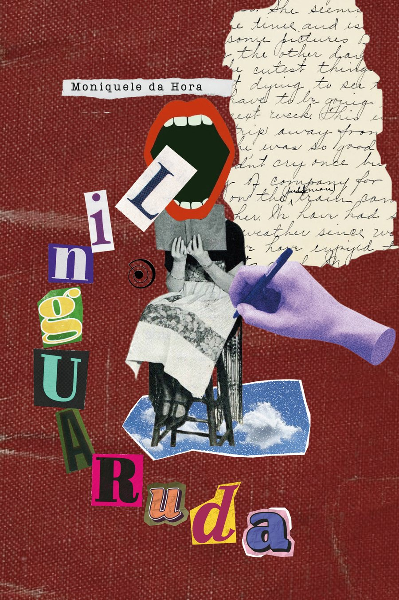

Em Linguaruda, uma coletânea de crônicas líricas, os versos se entrelaçam para conduzir o leitor em uma jornada marcada por afetos, descobertas, questionamentos e recomeços.
"Uma obra para quem acredita que a literatura não apenas conta histórias, mas também nos ajuda a compreender quem fomos, quem somos e quem ainda podemos nos tornar."
Com uma escrita sensível e intimista, a obra percorre os desafios de crescer, compreender a si mesma e encontrar sentido nas experiências que moldam a existência — explorando temas universais como identidade, pertencimento, amor, perda, amadurecimento e autoconhecimento.
Abre o WhatsApp com uma mensagem pronta — é só confirmar.
Moniquele da Hora
Millennial nascida em 1995, natural da Bahia, típica grapiúna. Formada em Letras (2013), especialista em Oratória e Comunicação Pedagógica, professora de Linguagens e escritora independente.
Neta de Valdete Ferreira, sempre brincou com as palavras e, ainda adolescente, deu vida a um blog que foi seu refúgio por anos e que, hoje, se transforma em obra.
É organizadora da obra institucional Enxergando o outro, encontro a mim e coautora da obra Pétalas e Lâminas 3, ambas publicadas pela Editora Via Litterarum.
Adora acreditar em significados e encontra na literatura uma forma de colorir o mundo com seus pontos de continuação.
Essa é apenas uma amostra. Seu Linguaruda te espera, com cheiro de livro novo e páginas amareladas pra serem viradas de verdade.
Quero ler o livro todoEm Itabuna e Ilhéus, a entrega ou a retirada é combinada com você pelo WhatsApp, e o frete é grátis. Para o resto do Brasil, também enviamos com frete grátis: é só combinar pelo WhatsApp.
Pode sim! Enviamos para todo o Brasil com frete grátis. É só chamar pelo WhatsApp e combinar o envio.
Pix (principal) ou no cartão de crédito ou débito (link de pagamento ou maquininha).
Linguaruda · Moniquele da Hora · Via Litterarum, 2026 · @moniqueledahora